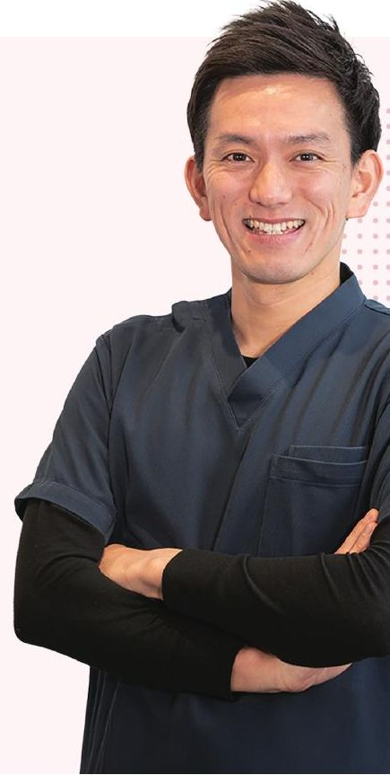
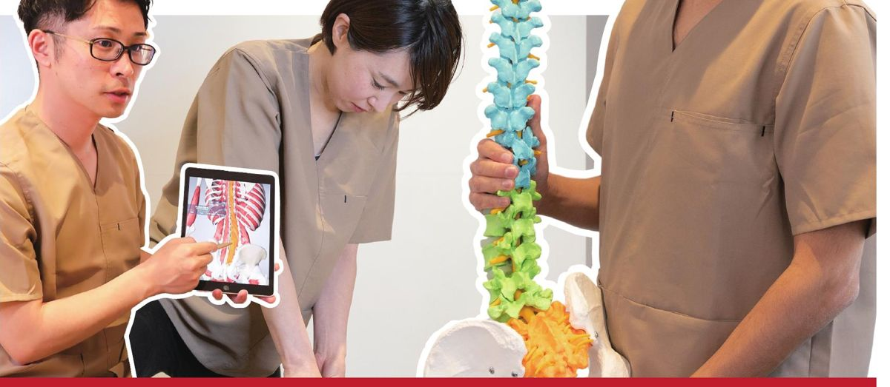
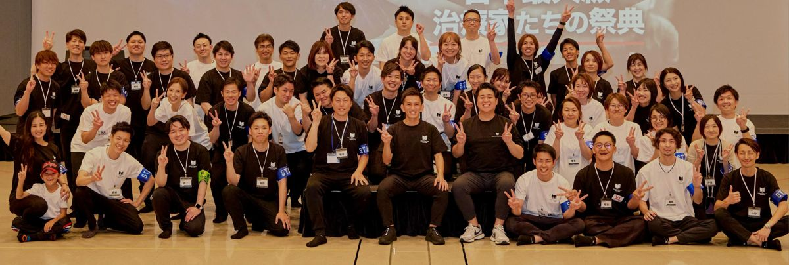
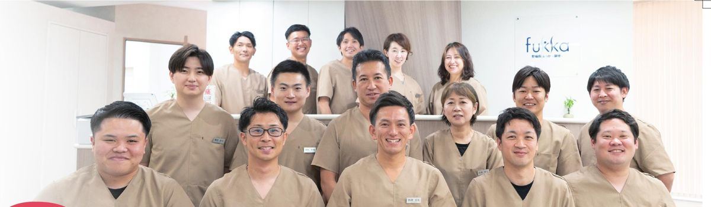

「情熱大陸」ご取材のお願い ｜ 企画ご提案書株式会社Medical Book Group 2026.10
腰痛 × 理学療法士 × 新しい医療モデル
腰痛は、
医者には
治せない。
“痛みの第一選択”をつくる──
病院でも、整体でもない「第三の場所」に人生を賭ける
39歳・理学療法士の挑戦を、密着していただけませんか。
松田 圭太
まつだ・けいた／1987年 宮崎県生まれ（39歳）／理学療法士
株式会社Medical Book Group 代表取締役
整痛院ふっか 総院長

妻と4人の子の父。福岡を拠点に、東京・銀座へ。
3万人+
医療機関で診てきた
患者数（理学療法士として）
4,000人+
学長を務める
日本最大級の治療家コミュニティ
11.76億円
創業5期目のグループ年商
社員13人・1人あたり全国平均の4倍超
01すごい人WHO
- 独自の痛み治療法「MSMメソッド」創始者（商標登録）。全国で2,500名以上の治療家が受講
- 大阪・関西万博でゲストスピーカー登壇（2025）
- 東久邇宮文化褒賞を受賞（2025）
- 世界経済フォーラム／国連後援国際サミット（インド）に登壇（2026）
- 初の著書『腰痛は医者には治せない』（小学館）出版（2026）
- 自費整体院で累計12,000名超を施術。米国・ドバイからも問い合わせ
ストイックな素顔：現場に立ち続けながら経営。自らも国内外で技術に投資し、スタッフを米国の解剖学実習に送り出す。「痛み治療で日本トップ」を本気で口にする。※日々のルーティン等を追記
02生い立ちORIGIN
- 1987宮崎県に生まれる 幼少期・PTを志した原体験を追記
- 2009理学療法士免許取得。整形・内科・神経疾患まで累計3万人以上を治療
- 臨床「医師一強」の現場と、薬・手術中心の治療の限界に直面
- 旅世界を旅し、日本医療のモラルとホスピタリティの価値を知る
- 2016独立。慢性腰痛専門「整体院 福佳 -fukka-」開院
- 2021治療家教育の会社を設立。オンライン大学「疼痛治療カレッジ」
- 2025新モデル「整痛院ふっか」銀座に開院。連日予約で満員
- 2027整形外科クリニック開院へ（準備中）
03なぜ、やるのかWHY
腰痛を抱えても「どこに行けばいいかわからない」。病院では薬や手術といった対処療法が中心で、根本的な改善に届かない人が多くいる。一方で、一部の天才にしかできない技術では医療は変わらない──。松田は、再現性のある、科学的根拠に基づいた治療を仕組みとして広げることを選んだ。
「痛みが起きても、どこに行っていいかわからない。“ここに行けば大丈夫”と言える場所をつくれば、救える人生がもっとある。」
― 松田圭太（会社紹介資料「最後に」より要約）
「情熱大陸」ご取材のお願い ｜ 企画ご提案書松田圭太 × 整痛院ふっか
04何をやろうとしているのか ── 新しい試み「整痛院」WHAT
腰痛
日本人の自覚症状で常に上位の“国民病”。慢性化に悩む人が多い
新しい
治療
運動療法×認知行動療法×徒手療法を組み合わせる
科学的
根拠
慢性疼痛診療ガイドラインで推奨度の高い治療を軸に
新しい
モデル
理学療法士が主役の自費リハ＋整形外科の融合
健康
寿命
平均寿命との差は男性8.8年・女性12.1年（厚労省）
社会
貢献
痛みで諦める人生をなくし、医療人の新たな活躍の場を
「整痛院（せいつういん）」は、急性期は医療機関、慢性の痛みは整痛院という役割分担で、痛みの“第一選択”を目指す新しい医療モデル。腰痛特化型の検査で根本原因を突き止め、エビデンスの高い運動療法・認知行動療法で改善へ導く。施術するのは国家資格を持つ理学療法士・作業療法士。2025年6月に銀座で開院し、1年以上連日予約で埋まる。2027年には整形外科と融合した「総合疼痛医療」へ踏み出す。
これまで
整痛院ふっか
治療
薬・注射・手術中心の対処療法
根本原因への運動療法・認知行動療法
担い手
医師一強／技術は属人的
PT・OTが専門性を発揮、研修で再現性を担保
目標
痛みを“抑える”
痛みに強い体と、健康寿命の延伸

05視聴者が見たいもの ── 番組としての見どころWHY NOW
「自分の腰痛」に
直結する誰もが一度は経験する腰痛。視聴者自身や家族の悩みと地続きで、“治る道筋”を知りたい層は幅広い。
医療の常識に
挑む男「腰痛は医者には治せない」と言い切る理学療法士。挑発的な主張の裏にある、科学的根拠と覚悟を描ける。
ストイックさと
家族の素顔年商10億超の経営者であり、4人の子の父。現場と経営と家庭を行き来する、普通の人とは違う日常。
06取材のご提案 ── ヒト・モノ・場所SHOOTING PLAN
| ヒト |
松田圭太（主人公）／重度の慢性腰痛から回復を目指す患者さん／PT出身の若手スタッフ（川田大輔、内藤隆之介 ほか）／妻と4人の子ども／全国の治療家コミュニティの受講生 |
患者の初診から改善までの経過を追う。若手PTが「治す」技術を身につけ成長する姿。家族との時間に見せる父の顔。 |
|---|
| モノ |
MSMメソッド（商標登録の独自治療法）／腰痛特化型検査とタブレット・骨格模型を使った説明／著書『腰痛は医者には治せない』 |
「なぜ痛むのか」を患者に見せる独自の説明法。治療法を“誰でも再現できる”形に落とし込む開発の裏側。 |
|---|
| 場所 |
整痛院ふっか 銀座院（東京都中央区銀座3-13-19）／福岡本社／日本最大級の治療家イベント「MBJ SUMMIT」／米国デンバーの解剖学研修／開院準備中の整形外科 |
銀座の診療現場の緊張感。数百人の治療家を前に語るステージ。海外研修。新クリニック立ち上げの奔走。 |
|---|

日本最大級の治療家の祭典「MBJ SUMMIT」

整痛院ふっか 銀座院のスタッフ（理学療法士・作業療法士）
密着のクライマックス：2027年、整形外科クリニック開院。
「痛みの第一選択」への第一歩を、カメラの前で。
開院準備から患者を迎える初日まで、今まさに動いている挑戦をリアルタイムで記録いただけます。撮影時期・内容は柔軟にご相談に応じます。
お問い合わせ
株式会社Medical Book Group
担当：ご担当者名
TEL：番号
Mail：アドレス